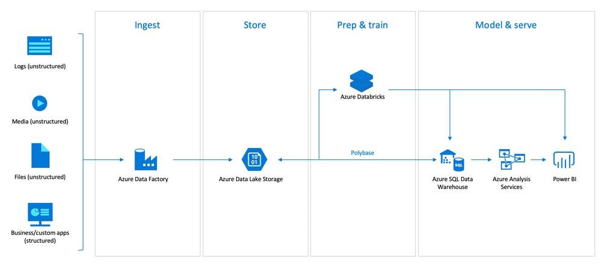

Need to process large-scale data efficiently with incremental loads.

Designed ETL pipeline using Azure Data Factory to ingest data into ADLS, processed using Databricks (PySpark), and stored in Delta Lake.
Reduced processing time by 40% and enabled scalable analytics.